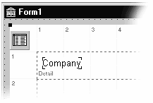

Создание отчетов с помощью Quick Report 3 (статья)
Создание отчетов с помощью
QuickReport 3
Что такое QuickReport 3?
QuickReport 3 это набор компонент для Delphi позволяющий вам построить отчет из базы данных быстро и просто. Позволяет не только отпечатать отчет, но и просмотреть его на экране, что позволяет пользователю проверить результат без порчи бумаги и экспортировать отчет в другие форматы, такие как простой ASCII текст, текст разделенный запятыми (CSV) и в HTML.
QuickReport сам написан на Delphi и знает все про модель Delphi обработки баз данных. Поэтому вы можете для создания отчетов в традиционных базах данных, базирующихся на BDE, таких как Paradox и dBase, клиентских наборов данных используемых в многоуровневой среде (multi-tier), новое для Delphi 5 ADO и Interbase Express components, так же альтернативные движки третьих сторон, такие как Apollo. Вы можете использовать QuickReport и для печати данных не из баз, если в этом есть потребность.
Данное руководство разработано для того, что бы быстрее освоить QuickReport, так что вы можете немедленно начать использовать его в ваших приложениях.
А такжеQuickReport это прекрасный продукт, но если вам нужны расширенные возможности, то вы можете их расширить с помощью QuickReport Pro. В версию Pro включено все, что имеется в обычной версии плюс:
| · | Три дополнительных фильтра: |
| 1. | Excel XLS: XLS фильтр совместим с версией Excel 4 и позже, и предоставляет простой и надежный механизм для экспортирования данных в электронную таблицу. |
| 2. | Rich Text RTF: RTF фильтр базируется на спецификации Microsoft RTF версии 1.5, поддерживает больше возможностей, чем TRichEdit. |
| 3. | Windows Metafile WMF: WMF фильтр позволяет сохранить отчет в мета графическом формате. |
| · | Несколько дополнительных компонент. |
| 1. | TQREditor построитель отчетов для конечного пользователя, что позволяет поставлять отчеты отдельно от программы. |
| 2. | TQuickAbstractRep наследник от базового класса TcustomQuickRep, который не использует TDataset - используйте это для построения своих собственных систем |
| 3. | TQRLoopBand печатает секцию несколько раз в зависимости от свойства PrintCount - прекрасная вещь для создания бланк форм. |
| 4. | TQRListWizard позволяет создать отчет на основе списка полей вашей таблицы |
| 5. | Прекрасная поддержка через email. |
| 6. | Полные исходные тексты. Программист может просто модифицировать код для локализации на конкретный язык, адоптировать в соответствии с требованиями локального стандарта на интерфейсы, добавить новые свойства и т.д. |
| 7. | Больше демо проектов, с углубленным качеством, включая примеры использования всех дополнительных свойств версии Pro, и дополнительная техника по написанию собственных функций для анализатора выражений. |
Вы можете получить QuickReport Professional путем заполнения формы заказа на нашем web сайте, или у наших дистрибуторов QBS Software Ltd на http://www.qbss.com или у вашего локального продавца Delphi.
Первый отчет
Наилучший путь познать QuickReport это посмотреть его в действии. Данная глава показывает, как создать очень простой отчет. Запустите Дельфи и выполните следующие шаги:
| 1 | Выберите File | New Application. |
| 2 | Бросьте TTable компонент на главную форму. |
| 3 | С помощью Object Inspector установите свойство DatabaseName на 'DBDemos', TableName на 'CUSTOMER.DB' и Active в True. |
| 4 | Бросьте TQuickRep компонент на главную форму. Размеры и позиция не имеют никакого значения. |
| 5 | Установите свойство DataSet на 'Table1'. Это ключевой шаг. Генератор отчетов проходит по всем записям в DataSet, только в этом случае Table1, может быть распечатан или просмотрен. |
| 6 | Если необходимо, то раскройте свойство Bands в Object Inspector путем нажатия на значок +. Установите HasDetail в True. Вы увидите, как появится секция в вашем отчете; смена свойства в действительности создает DetailBand1 объект. |
| 7 | Бросьте TQRDBText компонент на вновь созданную секцию. |
| 8 | Смените свойство DataSet на 'Table1' и DataField на 'Company'. |
В данный момент вы должны видеть не что подобное, изображенному на рисунке Figure 1.
Figure 1 – Setting up a basic report

Для проверки, что вы все выполнили правильно, просмотрите отчет, для этого в любом месте TQuickRep щелкните правой кнопкой мышки и выберите Preview из меню.
Если вы видите это, то это значит, что вы создали отчет, который работает в design time. Конечно, не всегда все получается сразу. Если вы получили пустой лист, то проверьте, что выполнили все выше описанные шаги полностью – обычно забывают установить свойство TTable1.Active в значение True. Подобно если вы видите, что отчет содержит только одну строку – 'Kauai Dive Shoppe' – то проблема в том, что вы забыли связать QuickRep1 Dataset с TTable1.
Еще одна частая проблема, что вы не видите кнопок на линейке в форме просмотра. Тут никто не виноват (J): вы должны связаться с производителем операционной системы вашего компьютера и сказать 'DLL Hell'. Specifically, your machine's copy of the common control library (comctrl32.dll) is before 4.72, and needs updating. (От переводчика - замените comctrl32.dll на более свежую).
Вы также можете загрузить самую свежую версию comctrl32.dll с сайта Microsoft http://www.microsoft.com. Но поскольку данный файл входит в комплект поставки Internet Explorer и Windows Service Packs, то вы можете взять его с вашего CD. (В действительности вряд ли подобный баг вас затруднит как разработчика)
Теперь заставим данный отчет работать в откомпилированной программе. Вы должны написать код для вызова TQuickRep.Preview:
| 1 | Разместите клавишу на вашей форме и установите ее свойство в 'Просмотр' |
| 2 | Дважды щелкните по данной кнопке, для добавления обработчика OnClick. Добавьте одну строчку кода: |
procedure TForm1.Button1Click(Sender: TObject); begin QuickRep1.Preview; end;
Теперь запустите программу и нажмите кнопку Просмотр. Должно появится окно просмотра. Если вы желаете напечатать отчет напрямую на принтер по умолчанию, то просто смените слово Preview на слово Print, то есть
procedure TForm1.Button1Click(Sender: TObject); begin QuickRep1.Print; end;
В данный момент следует сделать несколько замечаний. В данной тестовой программе компонент TQuickRep расположен на главной форме и, как вы видите это выглядит не совсем хорошо. В реальной программе вы никогда не будете показывать форму содержащую TQuickRep. Вместо этого вы разметите его на другой форме.
Для того, что бы сделать данный пример похожим на настоящее приложение, сделаем еще несколько шагов:
| 1 | Создаем другую форму, назовем ее как Form2 |
| 2 | Сделаем ее главной формой Project | Options | Main form to Form2 |
| 3 | Бросим кнопку на Form2 |
| 4 | Напишем код в обработчике события кнопки |
procedure TForm2.Button1Click(Sender: TObject); begin Form1.QuickRep1.Preview; end;
| 5 | Откомпилируем проект. Компилятор возмутится, что на Unit1 нет ссылки в Unit2's Uses, и предложит исправить код, соглашаемся. |
Программа должна быть снова откомпилирована и запущена, и теперь выглядит лучше и более 'реалистично'. Конечный пользователь уже не видит компонента TQuickRep.
Выше приведенное сказано для того, что бы в дальнейшем во всех примерах использовалась дополнительная форма, надеюсь вы будете так поступать и в реальных программах.
Компоненты
Все компоненты QuickReport расположены на закладке QReport палитры компонент Delphi. Здесь краткий тур что это такое и как они помогут вам.
TQuickRep. Это наиболее важный компонент, это контейнер для всех других печатных компонент. Выглядит как лист бумаги, на котором вы будете печатать. Его свойство Page позволяет установить размеры бумаги, в то же время свойство Dataset определяет источник данных для отчета.
Заметим, что вместо размещения компонента TQuickRep на одной из форм вы можете добавить TQuickReport модуль в ваш проект:
| 6 | Выберите File | New…. |
| 7 | Выберите закладку New |
| 8 | Выберите Report item (в середине нижней строки) |
TQuickReport немного похож на TDataModule – это специальный тип формы, которая никогда не показывается пользователю программы. Если вы, то вы можете использовать TQuickReport на псевдо-форме вместо компонента TQuickRep– никакой разницы в их методах, свойствах и событиях. Но мы рекомендуем, на собственном опыте, что вы разместите компонент TQuickRep на форме: это наиболее подходящее решение. Например, размещение TQuickRep на форме позволяет вам использовать обработчик OnCreate если вы пожелаете добавить некоторые объекты в отчет программным путем.
Секции (Band) компонентыЭто также компонеты-контейнеры, представляющие собой как бы горизонтальный полоски в отчете. Секции могут быть привязаны к физической позиции на странице – например вверху – и также могут плавать по странице в при отражение данных из master/detail. Например, может быть несколько записей по продаже для одного заказчика, так что секция содержащая записи об продажах может появляться несколько раз для каждого заказчика отдельно.
TQRSubDetail. Это секция для отражения данных в master/detail связях. Вы также можете сделать ее мастером для другой секции detail, и таким образом создать несколько уровней детализации.
TQRStringsBand. Данный тип секции представляет механизм создания отчетов без использования TDataSet. Для выборки данных используется TStrings контейнер; вместо выборки из базы данных.
TQRBand. Базовый тип секции, который может играть различные роли в зависимости от свойства BandType. Обычно нет нужды бросать TQRBand в отчет. Вместо этого используйте свойство Bands компонента TQuickRep, который и создаст необходимые объекты TQRBand и установить требуемы свойства.
TQRChildBand. Используйте объект TQRChildBand когда вам требуется расширить существующую секцию. Например, вы разместили несколько компонент TQRMemo в секции, и желаете добавить TQRLabel, которая должна быть всегда нижк. Поскольку объекты TQRMemo могут занимать более одной строки, в зависимости от содержимого, то неэффективно размещать метку на самой секции. Вместо этого добавьте объект TQRChildBand, и разместите метку на нем. Наиболее простой путь добавить подобную секцию это дважды щелкнуть по свойству HasChild в Object Inspector.
TQRGroup. Секция которая печатается при смене выражения, обычно при смене значения какого либо поля из базы данных. Данная секция предназначена для группирования одинаковых записей. Например, для печати списка адресов, сгруппированного по полу State Code нужно добавить секцию и установить свойство Expression в значение State Code. При печати отчета адреса будут печататься по штатам.
Печатные (Printable) компонентыНаиболее подходящий аналог для печатных компонент QuickReport это стандартные компоненты Дельфи размещаемые на формах. Именно эти компоненты обеспечивают действительную печать на бумагу. TQRLabel. Размещает статический текст на странице.
TQRDBText. Эквивалент компоненты TDBText – используется для отображения содержимого полей базы данных. Похоже на стандартные компоненты, но предназначенные для использования с QuickReport, TQRDBText использует свойство DataSet для указания источника данных. Обычные data-aware компоненты используют свойство DataSource, которое требует использования отдельного компонента TDataSource для связи с набором данных. QuickReport не требуется.
TQRExpr. Используется для отображения 'выражений'. Обычно вы используете для предварительной обработки данных перед печатью. Наилучший путь думать, что это аналог расчетных calculated полей, используемых только в отчете. Например, вы можете объединить все части имени заказчика, поля в таблице customer "Title", "Forename" и "Surname". To Просто установите свойство Expression в
Title + " " + Forename + " " + Surname
В реальной жизни, вы вероятно будете использовать более сложное выражение, но данный пример дает представление об использовании.
TQRSysData. Компонент позволяет отображать 'системные данные', подобные номеру текущей страницы в отчете, и текущую дату и/или время.
TQRMemo. Очень похож на стандартный компонент TMemo; используйте для отображения многострочного текста. Как вы правильно предполагаете, данные содержатся в свойстве Lines типа Tstrings.
TQRExprMemo. Композиция TQRExpr и TQRMemo. Вы можете использовать для включения {вычисляемых} выражений в многострочный блок. Это позволяет абсолютно натуральном путем изготавливать адреса, особенно учитывая наличие свойства RemoveBlankLines. Например:
Company : {CompanyName} Address : {Address1} {Address2} Contact : {Contact + ' ' + Phone number}TQRRichText. Помещает rich text (то есть многострочный текст с RTF форматированием) на страницу. Одно из назначений данного компонента это печать содержимого компоненты TRichEdit control – просто назначьте свойство TQRRichText.ParentRichEdit.
TQRDBRichText. Это data-aware версия TQRRichText. Используйте для печати форматированного текста из BLOB полей.
TQRShape. Кузина редко используемого компонента TShape control из палитры 'Additional'. В действительности версия QuickReport очень полезна для размещения различного типа рюшечек в отчет, таких как разделительные лини над итогами или группирующие прямоугольники.
TQRImage. Отображает картинку или логотип в отчете. Поддерживает те же самые векторные и битмаповские форматы, что и TImage, и может быть установлено в design time с помощью свойства Picture.
TQRDBImage. data-aware версия, для отображения картинок из BLOB полей базы данных.
Просмотр и композитные отчетыTQRCompositeReport. Иногда вам требуется группировать совместно отдельные отчеты в один общий. Например, возможно вам нужно напечатать всех новых заказчиков за последнюю неделю вместе со всеми их заказами. Так как понятие заказчик включает в себя все эти вещи как одно целое, а сточки зрения базы данных вам для это требуется несколько отдельных отчетов. TQuickRep компонент позволяет выполнить эту задачу.
Путь для решения это задачи в использовании TQRCompositeReport компонента. Разместите один на форме. Во первых, вы должны определить обработчик для события OnAddReports, который вызывает метод TQRCompositeReport.Add для добавления всех TQuickRep компонент необходимых для печати. Предположим, что отчеты которые вы желаете объединить находятся на формах с именами RepNewCust, RepOrderSummary и StockReorder, и во всех случаях TQuickRep компонент называется 'Report' (см. главу 'Добавляем TQuickRep' ниже для понимания почему вы должны делать это). Для этого ваш обработчик OnAddReports выглядеть следующим образом
procedure TForm1.QRCompositeReport1AddReports( Sender: TObject); begin QRCompositeReport1.Reports.Add(RepNewCust.Report); QRCompositeReport1.Reports.Add(RepOrderSummary.Report); QRCompositeReport1.Reports.Add(RepStockReorder.Report); end; (Если вы не брезгуете использованием оператора with в вашем коде, то вы можете написать так with QRCompositeReport1.Reports do begin ... end;
и убрать плохо выглядящее повторение QRCompositeReport1.Reports из всех трех строк.)
Теперь вы можете вызывать QRCompositeReport1.Print для печати всех трех отчетов в одном задании, и QRCompositeReport1.Preview to для их просмотра. Имеются также несколько свойств для компонента TQRCompositeReport которые позволяют управлять размером бумаги и устанавливать заголовок для отчета – обычно требуется управлять всем для композитного отчета в одном месте.
TQRPreview. Для просмотра отчета перед печатью, все что вам нужно это вызвать TQuickRep.Preview and и стандартное окно просмотра появится. Во многих случаях, вам нужно более полный контроль над окном просмотра.
Компонент TQRPreview позволяет это сделать. Бросьте один на вашу формы, после этого добавьте строку кода в обработчике TQuickRep.OnPreview, компонент работает как основа для размещения ваших органов управления. Если у вас еще больше амбиций или вы желаете сменить просмотр для композитных отчетов, то вы можете зарегистрировать свою собственную форму для просмотра. Смотрите главу 'Создание собственного просмотра'.
ФильтрыИногда, вместо печати или просмотра, вам нужно экспортировать данные их вашей базы в другой формат. QuickReport включает в себя три типа фильтров, которые позволяют быстро и просто выполнить данную работу. Просто бросьте компонент экспорта на ту же форму, что и отчет, и список файловых форматов появится в выпадающем списке Save To file диалоге просмотра. Регистрация автоматическая, вам не нужно ничего кодировать! (Но не беспокойтесь, вы можете экспортировать и программно.)
Заметим, что не все печатные компоненты могут быть экспортированы. Обычно, только содержимое следующих компонент появляется в экспортируемых данных: TQRLabel, TQRDBText, TQRExpr, TQRMemo, TQRSysdata and TQRExprMemo.
TQRTextFilter. 'Text' формат: экспортирует отчет, как простой ASCII текст, используются пробелы для разделения полей.
TQRCSVFilter. CSV формат: экспортирует отчет 'Comma Separated Variables'. Используются запятые для разделения полей, данный фильтр вставляет "двойные кавычки " вокруг них, что позволяет использовать запятые внутри полей. Данный формат очень легко импортируется в различного рода электронные таблицы, такие как Microsoft Excel. Тем не менее, компонент имеет свойство Separator, что позволяет использовать и другие разделители полей. По умолчанию его значение ',' запятая, но это может быть изменено в соответствии с вашими требованиями.
TQRHTMLFilter. HTML формат: экспортирует отчет в HyperText Markup Language, который используется в web браузерах, некоторых постовых клиентах, справочных системах и во многих других местах.
Имеется возможность экспортировать отчет из кода. Следующий пример показывает как использовать HTML фильтр.
quickrep1.ExportToFilter(
TQRHTMLDocumentFilter.Create('c:\report.txt'));
Для использования фильтров Text или CSV данных образом, используйте тот же самый вызов ExportToFilter но только укажите соответствующий фильтр как TQRAsciiExportFilter или TQRCommaSeparatedFilter.
ГрафикиTQRChart это версия TChart адаптированная под QuickReport. Позволяет добавлять сложные графики к вашим отчетам. TQRChart используется тем же самым образом, что и стандартный компонент Tchart – двойной щелчок вызывает редактор свойств. Подробности смотреть в документации на TeeChart.
Несовместимость версийВ связи с особенностью наших компонент, некоторые версии TeeChart не совсем совместимы с QuickReport, и компонент TQRChart и TeeChart могут быть загружены во время апгрейда QuickReport. Например, во время написания Delphi 3 версии QuickReport 3 (или выше) не все работало с TeeChart, поскольку версия of TeeChart которая поступала с Delphi 3 был кодирована под версию QuickReport 2. Для решения проблемы можно загрузить (свободно) TeeChart 4 (evaluation version J) с сайта TeeMach http://www.teemach.com/.
Данная редакция расширяет компонент Decision Cube из Client/Sever и Enterprise Editions редакций Delphi – это зависит от TeeChart. В данный момент нет пути использовать Delphi 3 Decision Cube вместе с QuickReport 3 и TeeChart.
Мы извиняемся за подобную ситуацию. С тех пор как мы разрешили другим сторонам писать для QR, мы не можем автономно вносить исправления в их код. Если вы имеете проблемы после апгрейда QuickReport, пожалуйста проверьте сайты http://www.qusoft.no/ и TeeMach's для получения последней информации.
Создание отчетов
Первым шагом создания отчета, является создание формы для размещения вашего компонента TQuickRep. Мы называем подобную форму, как 'форма отчета поскольку это просто контейнер для хранения компонент отчета и она никогда не показывается конечному пользователю. Хорошим тоном является применение некоторых соглашений по именованию подобных форм, так что бы их было просто идентифицировать в project manager и при просмотре каталога файлов. Например, вы можете использовать префикс для вех отчетов как 'rep' или 'rp'. Вы можете использовать подобную схему для всех форм и модулей данных.
Добавляем TQuickRepСледующий шаг, размещение TQuickRep на форме. Другой соглашение именуйте все компоненты TQuickRep, как 'Report', вы сможете ссылаться на них как repCustomerListing.Report, repSalesListing.Report.
Свойства Units и ZoomПосле размещения компонента TQuickRep на форме вы увидите сетку для позиционирования различных компонент в отчете. Сетка показывается в текущих единицах измерения QuickReport. Выбор соответствующей единицы измерения производится через свойство TQuickRep.Units в инспекторе объектов. Сетка изменяется в соответствии с единицами измерения.
При установке свойства Units в 'MM', сетка отображается с шагом в 10mm; при установке в 'Inches' с интервалом в один дюйм. Используя сетку, вы можете получить очень точное размещение элементов, и изменение размеров с точностью 0.01" или 0.01mm.
Обычно ваш экран слишком мал, что бы отобразить все компоненты TQuickRep, поскольку их размер базируется на действительных размерах выбранной бумаги. Для просмотра всего отчета измените свойство на 50% или меньше. Изменение свойства zoom заставляет TQuickRep и все печатные компоненты, содержащие в нем пере рисоваться в соответствии со шкалой. Данное свойство может использоваться и для увеличения, с целью более точного размещения важных компонент в отчете.
Размер страницы и границыВы можете очень точно указать параметры страницы, развернув список суб свойств свойства Page компоненты TQuickRep. Двойной щелчок на значке + слева от 'Page' в инспекторе объектов. Вы увидите все опции управляющие страницей.
Значения указываются в соответствии со свойством Units, в данном случае в дюймах. Границы видны в как синии линии в компоненте TQuickRep. Все секции изменяют свои размеры в соответствии с границами.
Не все принтеры поддерживают режим Custom для размеров бумаги. В данном случае вы должны выбрать 'Custom paper size' в диалоге драйвере принтера (доступно через панель управления Windows) и определить размер там. Устанавливает размер для принтера по умолчанию и окончательно установите свойство TQuickRep.Page.PaperSize в состояние Default. Ваш пользовательский размер будет доступен в runtime.
Альтернативно и возможно более безопасно использовать следующий больший размер, и установить границы для установки области печати в пользовательской области.
Выбор шрифтаКак вы уже знаете, вы можете установить шрифт по умолчанию для всего отчета в свойстве TQuickRep.Font. Двойной щелчок по свойству вызывает стандартный диалог выбора шрифтов.
Шрифты указанные здесь - это системные шрифты Windows, True Type шрифты и PostScript fonts (если установлен Adobe TypeManager). Вы можете использовать любую комбинацию шрифтов в отчете, но мы рекомендуем использовать только TrueType или PostScript шрифты, если вы желаете разрешить пользователю пользоваться просмотром. Системные шрифты не масштабируются во время просмотра.
Некоторые матричные принтеры печатают много быстрее если вы используете принтерные шрифты (шрифты встроенные в принтере). Такие шрифты не указываются в диалоге, но могут быть установлены программно:
repCustomerListing.Report.Font.Name := 'CG TIMES';
Читабельность вашего отчета очень зависит от выбора шрифтов. Вы должны подойти со всей внимательностью к этому выбору. Использование большого количество различных шрифтов, цветов может сделать чтение вашего отчета неприятной задачей.
Заголовок и описаниеКомпонент TQuickRep имеет свойства Title и Description, которые идентифицируют и описывают ваш отчет. Данные свойства только для вашего личного использования, что бы вы могли делать выбор отчета в соответствующей процедуре. Например, вы можете иметь отдельное меню для выбора отчетов из списка по его заголовку (title) и показывать его описание когда пользователь производит выбор отчета. Данную методику можно посмотреть в демонстрационном проекте QuickReport.
Свойство Title может быть распечатано в отчете с помощью TQRSysData компоненты.
Свойство FunctionsСвойство Functions компоненты TQuickRep разрешает вам установить константы и функции, которые могут быть использованы в выражениях TQRExpr, TQRExprMemo и TQRGroup. Двойной щелчок по клавише '…' в инспекторе объектов, вызывает специальный редактор свойств:
Используйте данный диалог, и построитель выражений, для определения констант которые вам требуются в выражениях. Например, вы видите в Figure 8 определение константы PI как 3.14159265358979. Другие функции, которые вы видите здесь, '…' заранее предопределены.
Работа с секциямиQuickReport является генератором работающий с секциями (band). Если вы незнакомы с данным понятием, то думайте об секциях как о маленьких кусочках бумаги (шаблонах), которые размещаются горизонтально на бумаге и заполняются данными. Различные шаблоны копируются в различные места страницы/отчета. Печатные компоненты TQRLabel, TQRDBText и другие, разработаны для размещения на секциях. Размещение данных компонент на прямую на отчет не предусмотрено.
Простейшим путем добавления секций в отчет является использование свойство TQuickRep.Bands в инспекторе объектов. Щелкните по значку '+' слева от надписи 'Bands' для развертывания списка секций
Инспектор объектов показывает, используется данная секция или нет, и вы можете добавить или удалить любую секцию просто установив соответствующее свойство. Секции созданные данным путем имеют имена, описывающие их назначение: DetailBand1, PageHeaderBand1 и т.д. Свойство BandType устанавливается автоматически.
Хотя и возможно добавление секций вручную и установке BandType в rbSubDetail или rbGroupHeader, но это не рекомендуется. Данные секции предназначены для использования только с секциями TQRSubDetail и TQRGroup. Использование их где-либо еще может дать непредсказуемый результат.
Вы также можете добавить секции путем выбора компоненты TQRBand из палитры и размещения их в отчете. Заметим, что в этом случае вы должны сами побеспокоиться об установке свойства BandType, и вы также должны дать секции подходящее имя. Свойство Bands контейнера TQuickRep преобразуется автоматически для отражения секций добавленных в отчет данным путем.
Здесь список простых секций, которые вы можете добавить в отчет:
Band type Purpose
Page Header Первая секция, обычно печатается на каждой странице. Печать на первой странице определяется свойством Options.FirstPageHeader. Значение по умолчанию: печатать на первой странице.
Title Секция title - первая секция, которая печатается в отчете (после заголовка первой страницы, если есть). Часто используется для печати титульного листа отчета, критериев выбора данных, Даты и времени создания и т.д.
Column Header Секция заголовков, печатается вверху регулярного отчета, на каждой странице. После заголовка страницы (и после Title на первой странице). В много колоночном отчете , печатается для каждой колонки. Часто используется для печати наименований полей.
Detail Секция для печати каждой записи (строки) вашего набора данных. Это конечно наиболее важная секция в отчете и которая занимает основное место в вашем отчете. Вы должны поместить data-aware печатные компоненты, такие как TQRDBText на эту секцию.
Summary После печати всех секций detail, вы можете отпечатать суммарные итоги в данной секции..
Page Footer Последняя секция на каждой странице. Печать на последней странице определяется свойством Options.LastPageFooter..
Как только вы добавляете новые секции в отчет, вы видите как они позиционируются в порядке действительной печати. Вы видите, что секция Page Header помещается вверх, следующая за ней секция Title, column header и так далее.
Тип каждой секции печатается маленькими буквами в левом нижнем углу. Это позволяет вам идентифицировать их в отчете. Данный текст не попадает в финальный отчет.
Секции появляющиеся в отчете компоненты TQuickRep показываются в том порядке, в каком они будут при печати. Это помогает понять как это будет отпечатано. Наиболее частое использование секций показано на Figure 10, но это становится весьма сложным, когда вы начинаете печатать суб-секции и групировавать.
Размеры секцийСекции получают их горизонтальный размер от компоненты TQuickRep. Их свойства Size.Width используются только как read only; Попытка записи в них других значений игнорируется. Для одно-колоночного отчета, ширина всех секций устанавливается равной ширине страницы минус левая и правая границы. Во многоколоночном отчете, ширина секции (Column Header, Detail, Sub Detail, Group Header and Group Footer) подстраивается под доступную ширину отдельной колонки
Тем не менее вы можете изменять вертикальный размер секции. Выберите секцию и измените размер с помощью мышки или с помощью изменения свойства Size.Height.
Включение и выключение секцийИногда вы не желаете запретить печать той или другой секции. Это может быть сделано или в design time или в run time, установкой свойства TQRBand.Enabled в False.
Во время генерации отчета вы также можете временно запретить печать секции в обработчике события BeforePrint. Данный обработчик имеет параметр PrintBand, который вы можете установить в False для запрета печати секции – но только на один раз. Данное свойство весьма удобно для организации простой фильтрации:
procedure TrepCusList.RepDetailBeforePrint (Sender: TQRCustomBand; var PrintBand: Boolean); begin PrintBand := CustTableTotalSales > 3000000; end;
Примечание
Когда PrintBand устанавливается в False для detail секции, значения для данной записи не включаются в расчет агрегатных TQRExr функций, например функция SUM. Данное поведение отличается между версиями QuickReport 2 и QuickReport 3.
Если вы выключите секцию Page Footer, следствием будет появление пустого пространства внизу каждой страницы – секция Detail не использует данное пространство, QuickReport не проверяет размер страницы каждый раз. Так что если вы смените свойство Enabled секции Page Footer, то вызовите метод ResetPageFooterSize для обновления информации.
ГруппыГруппы позволяют вам генерировать дополнительные секции между группами записей. Например, если вы печатаете список из адресной книги, вы может быть желаете группировать все записи у которых первая буква имени одинаковая, и печатать большую букву между группами – в действительности это то, что мы сейчас сделаем в примере.
Для создания группы:
| 1 | Создайте простой отчет, как это описано в 'Первый отчет'. |
| 2 | Установите свойство IndexName компоненты TTable в 'ByCompany'. |
| 3 | Бросьте компонент TQRGroup на TQuickRep объект, появится новая секция. Данная секция будет заголовком для группы (group header). Каждый раз, когда будет начинаться новая группа, данная секция будет напечатана. |
| 4 | Установите свойство Expression в |
| 5 | Бросьте компонент TQRExpr на данную секцию. Установите свойство Expression в тоже самое значение |
| 6 | Выберите компонент TQRBand на палитре и бросьте его в отчет. Переименуйте его в FooterBand1. |
| 7 | Щелкните по секции the group еще раз. Установите свойство TQRGroup.FooterBand в FooterBand1. |
| 8 | Бросьте компонент TQRLabel на footer band. Установите свойство Caption в 'FOOTER'. |
Просмотрите отчет, или путем запуска программы, или просто выбрав правой кнопкой пункт Preview
Как планировалось, отчет показывает список всех компаний в алфавитном порядке, каждая группа имеет заголовок в виде буквы.
Мастер/детайл отчетыЧасто требуется отчет типа master/detail – это когда вы извлекаете данные из двух наборов данных, объединенных связью master/detail. QuickReport позволяет вам включать одну или несколько таких связей в отчет, с помощью компоненты TQRSubDetail.
В приведенном примере a master/detail отчета выводится список всех заказов по каждому заказчику в базе данных. Здесь краткий пример:
| 1 | Создайте группированный отчет, как описано в предыдущей главе. |
| 2 | Бросьте компонент TDataSource на форму, и назначьте его свойство DataSet равным 'Table1'. |
| 3 | Бросьте новый компонент TTable на форму. Установите его свойство DatabaseName в 'DBDemos', TableName в 'ORDERS.DB', IndexName в 'CustNo', MasterSource в 'DataSource1', MasterFields в 'CustNo' и Active в True. Два компонента TTable сейчас имеют связь master/detail. |
| 4 | Бросьте компонент TQRSubDetail на существующий TQuickRep, где это появится как новая секция. Заметим, что свойство Master установилось в QuickRep1. Связь master/detail между двумя TTable объектами отразилось между объектами отчета и секциями. |
| 5 | Установите свойство DataSet компоненты TQRSubDetail в 'Table2'. Компонент TQRSubDetail будет выводить все записи через его DataSet для каждого изменения Dataset мастера. |
| 6 | Бросьте три компонента TQRDBText на секцию sub detail. Установите свойство DataSet в 'Table2', и установите свойство DataField в 'OrderNo', 'SaleDate' и 'ItemsTotal'. |
Теперь посмотрим отчет. Результат должен иметь список заказов ниже имени каждого заказчика. Заметим, что формат дат и денежных полей зависит от установок в Windows.
Обзор печатных (printable) компонент
В данный момент, вы уже имеете представление об печатных компонентах QuickReport's – использования их как обычных органов управления. Тем не менее есть несколько специфичных для QuickReport аспектов.
Текстовые компонентыТекстовые печатные компоненты QuickReport's – TQRLabel, TQRDBText, TQRExpr, TQRSysData, TQRMemo, TQRExprMemo, TQRRichText и TQRDBRichText – используют несколько общих свойств, которые они наследуют:
Property Purpose
AlignToBand По умолчанию все компоненты печатаются в позиции установленной во время проектирования. Но иногда более практично по вертикальным углам секции, на которой они размещены. Если свойство AlignToBand установлено в True, то компонент выравнивается относительно секции, в которой он размещен..
AutoSize При установке этого свойства в True компонент расширяется по горизонтали, что разместить весь текст.
AutoStretch Если свойство AutoStretch и WordWrap оба установлены в True, компонент может расширяться по вертикали, что бы разместить весь текст. Когда компонент расширяется подобным образом, то расширяется и секция, на которой он, определяется свойством CanExpand. При необходимости секция может расширяться на несколько страниц. Заметим, что если компонент расширяется, то это не перемещает другие компоненты вниз. Если имеются другие компоненты, которые зависят от размеров расширяемого компонента, то такие компоненты должны размещаться секции child. Заметим, что данное свойство не может быть использовано для компонент размещенных на любой секции внизу страницы, типично это page footer, но также любые секции, у которых установлено свойство AlignToBottom в True.
Frame Все текстовые компоненты могут показывать видимую рамку вокруг себя.
Size Все печатные компоненты имеют свойство Size. Если свойство AutoSize установлено в False вы можете использовать данное свойство для установки точного размера компонента. Данное свойство содержит также позицию компонента относительно секции.
WordWrap Если свойство WordWrap установлен True текст может расширяться на несколько строк.
Форматирование полейКомпонент TQRDBText использует опции форматирования определенные в для поля, к которому он подключен. Иногда, вам нужно отображать текст иначе, в этом случае вы можете использовать свойство Mask компоненты TQRDBText. В этом поле вы можете вводить те же самые значения, как это определено в функции FormatFloat function (для цифровых полей) и в функции FormatDateTime (для полей типа date и time) – в действительности, QuickReport сам вызывает эти функции. Покажем на примере, условимся, что вы хотите напечатать цифровое значение с двумя знаками после запятой, и в качестве разделителя тысяч - запятую, и отрицательный в круглых скобках. То маска должна выглядеть следующим образом #,##0.00;(#,##0.00) и которое напечатает для значений 1234 и -1234.5 следующий вывод 1,234.00 и (1,234.50) соответственно.
Сверьтесь с Delphi хелпом по функциям FormatFloat и FormatDateTime.
Для форматирования поля используйте свойство Mask. Маска работает по разному для разных типов полей.
Использование выраженийQuickReport включает расширенный анализатор выражений, используемый компонентами TQRExpr, TQRExprMemo и TQRGroup. Выражения могут быть использованы для объединения и манипулирования полями баз данных, и для выполнения различного форматирования. Их синтаксис подобен синтаксису Object Pascal: выражения могут быть логического, с плавающей запятой, целого типа или строкового типа. Заметим, что поля дат и времени преобразовываются в строки, а BLOB и memo поля не поддерживаются в выражениях.
Анализатор выражений использует следующий набор операторов:
Operators Function
+ Сложение и объединение строк
- * / Вычитание, умножение и деление
() Группирование
And Or Not Логические операторы
= < > <= >= <> Операции сравнения
И набор стандартных функций:
Function Description
AVERAGE(EXPR) Агрегатные функции. Среднее значение выражения
COPY(STR,S,L) Возвращает субстроку, начиная с позиции S размером L
COUNT Агрегатная функция, возвращает количество итераций секции Master.
DATE Возвращает текущую дату в виде строки
DIV(X, Y) Целочисленное деление X на Y
FALSE Логическое значение ЛОЖЬ False
FORMATNUMERIC(F, N) Форматирует номер N используя маску F. Маска соответствует функции FormatFloat.
FRAC(NUM) Возвращает дробную часть числа NUM
IF(EXPR, R1, R2) Возвращает или R1 или R2 в зависимости от логического значения EXPR
INT(NUM) Возвращает целую часть числа NUM
LOWER(STR) Возвращает строку из малых букв
MAX(EXPR) Агрегатная функция. Возвращает максимальное значение выражения EXPR
MIN(EXPR) Агрегатная функция. Возвращает минимальное значение выражения EXPR
PRETTY(STR) Возвращает строку, у которой первая буква заглавная, а остальные прописные
SQRT(NUM) Возвращает квадратный корень числа NUM
STR(NUM) Превращает число в строку
SUM(EXPR) Агрегатная функция. Возвращает сумму выражения EXPR
TIME Возвращает текущее время в виде строки
TRUE Логическое значение ИСТИНА
TYPEOF(EXPR) Возвращает тип выражения в виде строки. Например 'BOOLEAN'
UPPER(STR) Возвращает строку из больших букв
Если ваше выражение включает агрегатную функцию, например SUM или COUNT вы должны связать свойство Master с компонентом TQuickRep или TQRSubDetail. Для простого отчета это ваш компонент TQuickRep, но в сложных отчетах это может быть любой набор данных. Выражение пересчитывается каждый раз, как указатель master изменяется.
Свойство ResetAfterPrint также используется при работе с агрегатными функциями, и позволяет вам создавать, например групповые итоги как изменяемые во время отчета.
Построитель выраженийДля упрощения создания выражения, QuickReport включает специальный редактор свойств, который доступен по нажатию на клавишу '…'.
Построитель выражений позволяет вам разрабатывать ваше выражение путем выбора функций и имен полей из списка, что упрощает процесс и позволяет избежать типографических ошибок в идентификаторах полей. Также можно вызвать специальный диалог для выбора аргументов функций.
Создание собственного просмотра
Как мы отмечали ранее, в главе 'Просмотр и композитные отчеты', что имеется возможность создать свой собственный механизм просмотра. Теперь самое время показать, как это сделать.
Первым шагом создание собственного просмотра - это наследование от TQRPreviewInterface, подобно этому:
// use QRPrntr to get TQRPreviewInterface
TQRCustomPreviewInterface = class(TQRPreviewInterface)
public
function Show(AQRPrinter : TQRPrinter)
: TWinControl; override;
function ShowModal(AQRPrinter : TQRPrinter)
: TWinControl; override;
end;
Заметим, что это интерфейсный класс interface – это обрабатывает только несколько функций. Эти две функции предназначены для отображения в модальной и не модальной форме.
Предположим, что форма просмотра называется TCustPreview. Затем реализуем методы TQRCustomPreviewInterface, которые выглядят так:
function TQRCustomPreviewInterface.Show( AQRPrinter: TQRPrinter): TWinControl; var frm : TCustPreview; begin frm := TCustPreview.Create(Application, AQRPrinter); frm.Show; Result := frm; end; function TQRCustomPreviewInterface.ShowModal( AQRPrinter: TQRPrinter): TWinControl; var frm : TCustPreview; begin frm := TCustPreview.Create(Application, AQRPrinter); frm.ShowModal; Result := frm; end;
Для регистрации альтернативного просмотра мы должны вызвать функцию RegisterPreviewClass, из QRPrntr модуля. Вызов выглядит следующим образом:
RegisterPreviewClass(TQRCustomPreviewInterface);
Теперь мы сделали простой код и можем построить форму просмотра. Здесь только минимум; простой компонент TQRPreview на форме
Когда вы будете создавать реальный просмотровщик для ваших приложений, то вы добавите кнопки для вызова метода TQRPreview.Zoom и других возможностей.
Для поддержки механизм просмотра, я написал немного больше кода. Здесь объявление TCustPreview. Заметим, что я добавил новый конструктор, который позволяет принимать в качестве аргумента the TQRPrinter передаваемый методами Show и ShowModal интерфейсного класса. Delphi генерирует предупредительное сообщение, что новый конструктор скрывает оригинал. В данном случае это правильно и написал в классе
{$WARNINGS ON} ... {$WARNINGS OFF}
для подавления предупреждений компилятора.
{$WARNINGS OFF}
TCustPreview = class(TForm)
QRPreview1: TQRPreview;
procedure CustPreviewClose(Sender: TObject;
var Action: TCloseAction);
private
{ Private declarations }
fQRPrinter : TQRPrinter;
public
{ Public declarations }
constructor Create(AOwner : TComponent;
AQRPrinter : TQRPrinter); virtual;
end;
{$WARNINGS ON}
Окончательно, здесь реализация класса. Заметим, что код очистки расположен в обработчике OnClose. Если вы не вызовете метод ClosePreview здесь, вы будете иметь утечку памяти. (QuickReport 2 должны знать это новое требование. Вы должны модифицировать ваши существующие формы просмотра, когда будете сортировать их в QuickReport 3.)
constructor TCustPreview.Create(AOwner: TComponent; AQRPrinter: TQRPrinter); begin inherited Create(AOwner); fQRPrinter := AQRPrinter; QRPreview1.QRPrinter := AQRPrinter; end; procedure TCustPreview.CustPreviewClose(Sender: TObject; var Action: TCloseAction); begin fQRPrinter.ClosePreview(Self); Action := caFree; end;
Дополнительные ресурсы
Имеется много других ресурсов, которые помогут вам в применении QuickReport в ваших приложениях.
Help files. QuickReport хелп фалы инсталлируются и интегрируются с Delphi хелп системой. Как положено это чувствительно к контексту, также имеет руководство пользователя и база знаний. Но они не появляются в главном оглавлении справочной системы.
Demo applications. Вы можете найти здесь
Program Files\Borland\Delphi5\Demos
Проект Quickrpt\Qr3\qr3demo.dpr содержит множество примеров. Начните здесь если вы желаете поглубже изучить различные свойства QuickReport, например фильтры экспорта. Также посмотрите проект Db\Mastapp\mastapp.dpr, который содержит прекрасный пример использования QuickReport интегрированный в большой проект.
Templates and wizards. Стандартный репозиторий Delphi содержит шаблоны построения отчетов Master/detail, ярлыков и списков, плюс помощник построения отчетов (report building wizard). Выберите File | New из Delphi и смотрите закладки Forms и Business.
Website. Наш сайт http://www.qusoft.com Пожалуйста приходите и поищите больше примеров, апдейтов, советов и дополнений.
Примечание от Vit
Публикуется с сокращениями